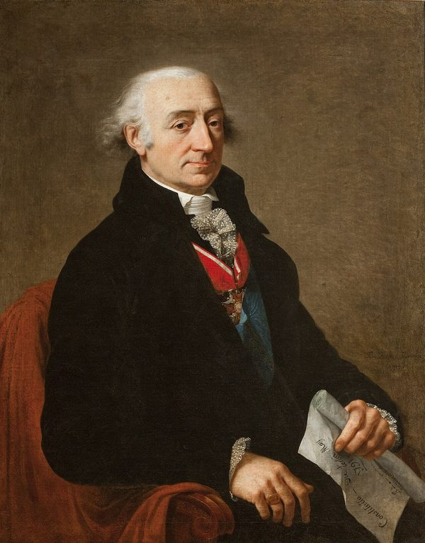

Dobra · 1678–1839 · from publications and the registers
The Marshal, the Land, and the School
Stanisław Małachowski, Marshal of the Four-Year Sejm, was lord of Dobra. He does not appear in the parish registers, but the school he rebuilt does.
Translated from the Polish original with the help of Claude. I give quotations from the registers in the original, with a translation.
Dobra, Jurków, Zadziele, Gruszowiec, Chyszówki, Wilczyce, and Łostówka made up the Dobra “klucz,” a single estate with a single lord. From 1711 it belonged to the Małachowski family. The most famous of them was Stanisław Małachowski (1736–1809), Marshal of the Four-Year Sejm (the Polish parliament of 1788–1792) and co-author of the Constitution of May 3, 1791.

According to regional histories, in 1788 the Marshal rebuilt the school in Dobra, and later he gave each of his subjects a morg of land (a land measure of about 1.4 acres), some 255 morgs in all, and released the peasants from part of their “pańszczyzna,” the labor they owed the manor. In memory of this, one of the settlements of Dobra is still called Morgi. In the reform of 1792 he reserved for himself, among other things, the hauling of 1,800 “kopa” (sixties) of staves for salt barrels to Wieliczka.
The Marshal himself does not appear in the parish registers. The school does, though, and it is much older than his reform. As early as October 1678, a few months after the church fire, a godfather in Dobra was the “Rector Scholae pro tunc,” the rector of the school at that time. It was in fact the school rector and the organist who carelessly started the fire that burned down the church, as the story “The Register Begins with a Fire” tells.
From the baptism register of Dobra parish, January 15, 1685
Patrini fuere Thomas Mielecki Scholae Rector et Dorothea Przybytkowa omnes de Dobra
The godparents were Tomasz Mielecki, rector of the school, and Dorota Przybytek, all from Dobra.
Dobra, baptisms 1678–1703 · ref. 4268/3500 · scan 035 · view scan ↗
In 1683–1687 Tomasz Mielecki was a godfather at least 31 times, in Dobra, Jurków, Chyszówki, Gruszowiec, Porąbka, and Zadziele. In the village the school rector was someone people were glad to ask to a baptism.
In the 19th century Dobra had a “trivial school,” that is, an elementary school. Mateusz Rudnicki, who was also the organist, taught there. In 1838 he was a witness at the wedding of the manor’s forester, as the story “The Forester of Dobra” tells. In December 1839 he was godfather to a peasant child from Jurków, together with Kunegunda Kisielewska, the wife of the estate’s leaseholder.
From the baptism register of Jurków, December 27, 1839
Mathaeus Rudnicki, D. Conegondis Kisielewska · Professor Scholae Trivialis Dobrensis, Conjux Possessoris Dobrensis
Mateusz Rudnicki, teacher at the trivial school in Dobra, and Mrs. Kunegunda Kisielewska, wife of the leaseholder of Dobra.
Jurków, baptisms 1825–1840 · ref. 4268/3565 · scan 035 · view scan ↗
Who replaced labor duty with rent on the estate? The sources differ. The Limanowa County office credits the Marshal with abolishing labor duty. The “Słownik geograficzny Królestwa Polskiego” (Geographical Dictionary of the Kingdom of Poland) of 1881 says that across the whole Dobra domain this was done around 1818–1820, under his nephew, Count Ludwik. The same count who in 1831 stood godfather to a child in Jurków, as the story “A Count at the Font” tells.
For a long time the school reached only a few. As late as 1884, fathers from Jurków signed their consent to their daughters’ marriages with a cross, because they could not write.
How certain is this
- CertainThe school rector in 1678, Tomasz Mielecki as godfather in 1683–1687, and the teacher Mateusz Rudnicki in 1839. Readings compared with the scans.
- ProbableThe rebuilding of the school in 1788 and the morgs for the subjects. Regional histories report them.
- To be checkedWho replaced labor duty with rent, and when. The sources give different versions.
What we don’t know
- Where the old school in Dobra stood and how many pupils attended it.
- On the endpaper of the Jurków baptism register there is a list, in Polish, of boys for the school from Dobra, Chyszówki, Łostówka, and Wilczyce. It has not been transcribed yet.
Sources
- Baptism registers: Dobra, ref. 4268/3500 (scans 004, 035); Jurków, ref. 4268/3565 (scan 035); on the Metryki website of the Polish Genealogical Society (PTG).
- Słownik geograficzny Królestwa Polskiego, vol. II (1881), entry “Dobra”; E. Wojtusiak, “Saskie czasy w karpackiej posiadłości Małachowskich” (Saxon Times on the Carpathian Estate of the Małachowski Family), Nasza Przeszłość 60 (1983).
- Limanowa County, “Wybitni ludzie z Limanowszczyzny” (Notable People of the Limanowa Region); historiadobrej.pl; Wikipedia.
- “Trzy stulecia Jurkowa” (Three Centuries of Jurków, 2026) and my book “Ród Podgórnich z Jurkowa” (The Podgórni Family of Jurków, 2026).